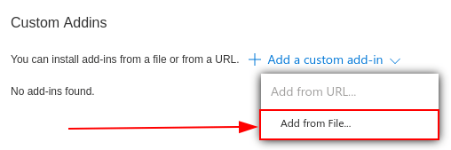
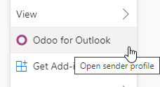

Complemento de Outlook¶
Outlook permite la conexión con aplicaciones de terceros para ejecutar acciones de la base de datos desde los correos electrónicos. Odoo tiene un plug in para Outlook que permite crear una oportunidad desde el panel de correo electrónico.
Configuración¶
El complemento de correo de Outlook se debe configurar tanto en Odoo como en Outlook.
Habilitar el complemento de correo¶
Primero, active la función Plugin de correo electrónico en la base de datos. Vaya a , active el Plugin de correo electrónico y Guarde la configuración.
Instalar el complemento de Outlook¶
Descargue () el siguiente archivo XML para subirlas después: https://download.odoocdn.com/plugins/outlook/manifest.xml.
Después, abra la bandeja de entrada de Outlook y seleccione cualquier correo. Para completar esto haga clic en el botón Más acciones del lado derecho superior y haga clic en Obtener agregados.

Truco
Para versiones con instalación local de Microsoft Outlook, ingrese al menú Obtener complementos cuando esté en modo previsualización (no con un mensaje abierto). Primero, haga clic en el icono … (puntos suspensivos) en la parte superior derecha de la previsualización del mensaje, después deslícese hacia abajo y haga clic en Obtener complementos.
Siguiendo estos pasos, seleccione la pestaña Mis agregados del lado izquierdo.

En la sección de abajo Agregados personalizados, haga clic en + Agregado personalizado y luego en Agregar desde archivo…
Para el siguiente paso, adjunte el archivo manifest.xml que descargó antes y haga clic en OK. Después, lea la advertencia y haga clic en Instalar.

Conectar la base de datos¶
Ahora, Outlook estará conectado con la base de datos de Odoo. Primero, abra cualquier correo en la bandeja de entrada de Outlook, haga clic en el botón Más acciones del lado derecho superior y seleccione Odoo para Outlook.
En el panel ubicado a la derecha ahora aparece la información de la empresa. Al final de la página, haga clic en Iniciar sesión.

Nota
Solo está disponible una cantidad limitada de solicitudes de información de la empresa (Enriquecimiento de leads) como prueba. Esta función requiere créditos prepagados.
Truco
Si después de un rato el panel sigue vacío, es posible que los ajustes de cookies de su navegador evitaron que cargara. Tome en cuenta que estos ajustes también cambian si está en el modo de «navegación privada» de su navegador.
Para solucionar este problema, configure el navegador para que siempre permita cookies en la página de complementos de Odoo.
Para Google Chrome, siga las siguientes instrucciones para cambiar los ajustes de cookies: https://support.google.com/chrome/answer/95647 y agregue download.odoo.com a la lista de Sitios que siempre pueden usar cookies.
Ahora ya puede abrir el panel de Outlook otra vez.
Ahora, ingrese el URL de la base de datos de Odoo y haga clic en iniciar sesión.

Ahora, haga clic en Permitir para abrir la ventana emergente.

Si el usuario no ha iniciado sesión en la base de datos, ingrese las credenciales. Haga clic en Permitir para dejar que el plugin de Outlook se conecte a la base de datos.

Agregar un atajo al complemento¶
De forma predeterminada, el complemento de Outlook se puede abrir desde el menú de Más acciones. Sin embargo, para ahorrar tiempo, es posible agregarlo a las demás acciones predeterminadas.
En la bandeja de entrada de Outlook, haga clic en Ajustes y después en Ver todos los ajustes de Outlook.

Ahora, seleccione Personalizar acciones en Correo, haga clic en Odoo para Outlook y después en Guardar.

Después de seguir estos pasos, abra cualquier correo y el atajo ya debería de aparecer.

Uso del plugin¶
Ya que haya instalado el plug-in y esté funcionando, todo lo que necesita hacer para crear un lead es hacer clic en le O [icono de Odoo] o ir a Más acciones y hacer clic en Odoo para Outlook. El panel lateral aparecerá en el lado derecho y en Oportunidades haga clic en Nueva. Aparecerá una nueva ventana con la oportunidad creada en la base de datos de Odoo.